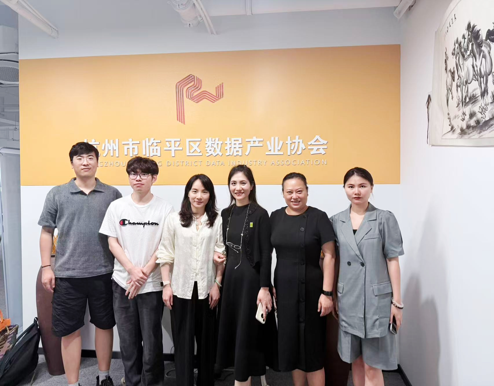
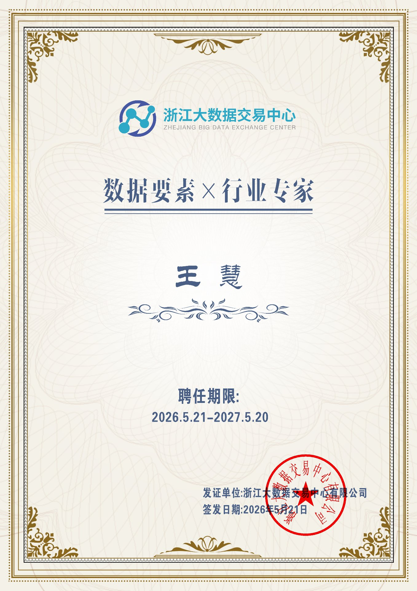
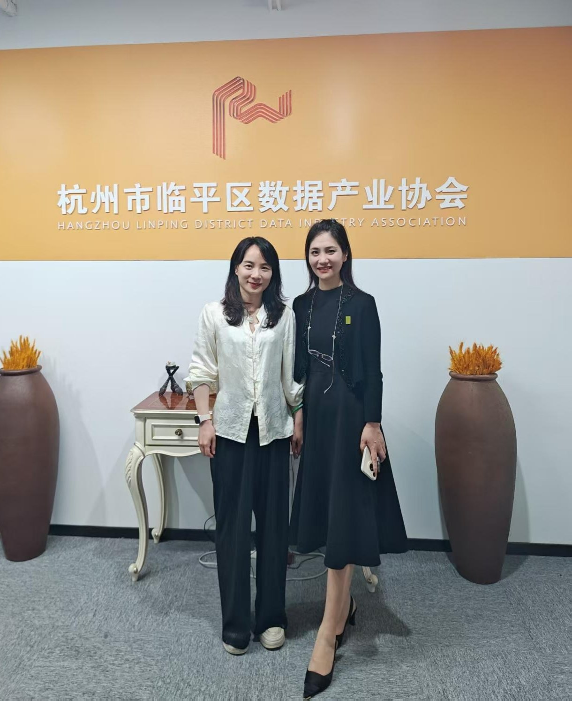

— 业务咨询 · 会员服务 —
业务咨询请联络


为持续推进全省数据要素市场化配置改革，推动省级行业标准、市场体系、生态资源向区县基层下沉，2026年5月20日，浙江大数据交易中心（以下简称"浙数交"）总经理助理、总经办主任刘梦迪一行赴杭州市临平区数据产业协会（以下简称"临平数协"）调研交流。临平数协会长王慧，雾透科技总裁赵妍携核心团队热情接待并陪同座谈。

本次交流旨在打通省市两级数据产业联动通道，推动省级顶层设计与区域产业实践深度融合。会上，刘梦迪主任为王慧会长颁发浙江大数据交易中心"数据要素×行业专家"聘书，吸纳一线产业创新实践力量加入浙数交智库，依托基层前沿探索成果反哺省级标准建设、行业生态优化，持续完善全省数据要素产业专业化、实战化支撑体系。
座谈会上，浙数交向临平数协会长、雾透科技董事长王慧颁发浙江大数据交易中心"数据要素×行业专家"聘书。

王慧会长的受聘，标志着临平数协在区县数据产业实践领域的经验与能力获得省级平台认可，也为临平区数据产业生态融入全省数据要素大市场开辟了更直接的通道。

座谈中，临平数协向浙数交调研组详细汇报了协会规范化运营、会员服务建设及产业赋能推进情况，重点介绍了协会"一体两翼"生态架构：以协会为生态枢纽，依托雾透科技筑牢数据三资化技术底座，联动后日资本构建数据要素金融赋能体系，形成"技术 + 资本 + 生态"的差异化服务能力，为区域企业提供数据治理、合规梳理、资产盘活、资本对接等全链条落地服务，有效破解基层企业数据应用不规范、价值难释放、落地难等痛点。
浙数交调研组对临平区域数据要素基层落地与实体赋能成效予以充分肯定。双方围绕数据合规流通、数商培育、行业自律、跨域协同、行业场景创新等重点领域进行了深入交流。
本次交流进一步畅通省市数据产业联动渠道，形成"顶层标准引领、基层实践落地"的良好格局。下一步，临平数协将立足区级行业职能，持续深化"一体两翼、三栖筑基"发展优势，紧扣数据要素市场化主线，做实数据三资化技术赋能、做强数据要素金融赋能，扎实推进区域数据要素规范建设、企业服务与生态培育，积极承接省级试点落地与场景创新工作，为全省数据要素市场规范、高质量发展贡献区域力量。
杭州市临平区数据产业协会（简称"临平数协"）于2025年12月27日在杭州数字港正式成立，是临平区深入实施数字经济创新提质"一号发展工程"的重要载体。协会以"打造长三角数据产业创新高地"为愿景，积极衔接国家数据局战略部署，助力临平在数据产业发展中抢占先机、赢得主动。
协会由雾透科技董事长王慧出任首任会长，建制理事会、监事会，集聚行业龙头、业内专家与优质企业。立足"数聚临平，协创未来"发展理念，锚定"政企桥·数据芯"定位，依托实战式创新，打通数据孤岛，落地数据资源化、资产化、资本化全链条闭环建设。
立足2026数据要素价值释放年发展风口，协会紧扣全国一体化数据市场建设部署，面向会员提供政策咨询、行业交流等全周期服务，严守数据安全，联动各地政企共建可信数据生态，聚力将临平打造为数据要素价值释放先行区，赋能数字中国建设。